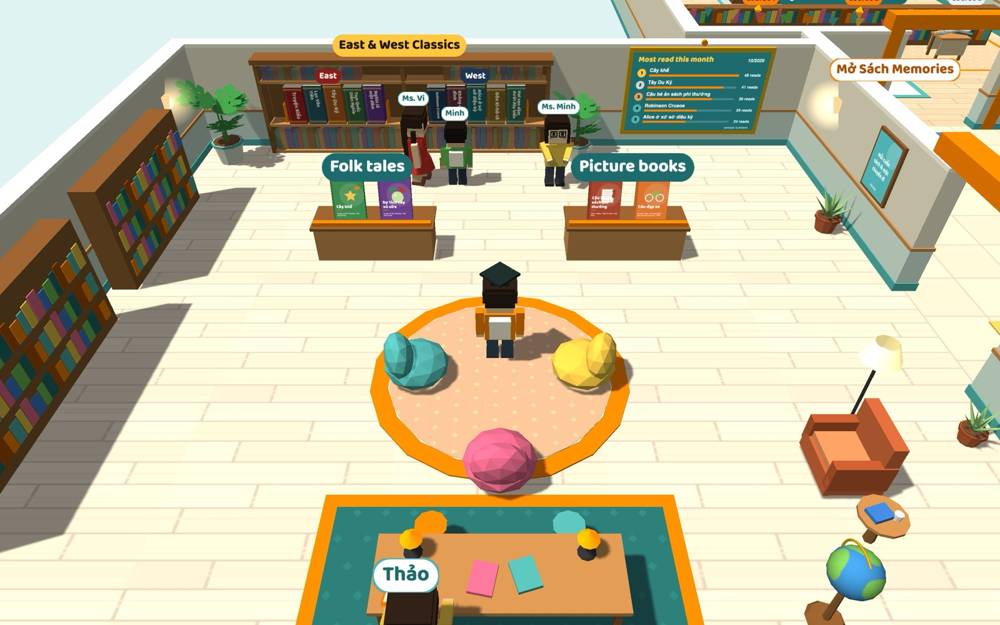
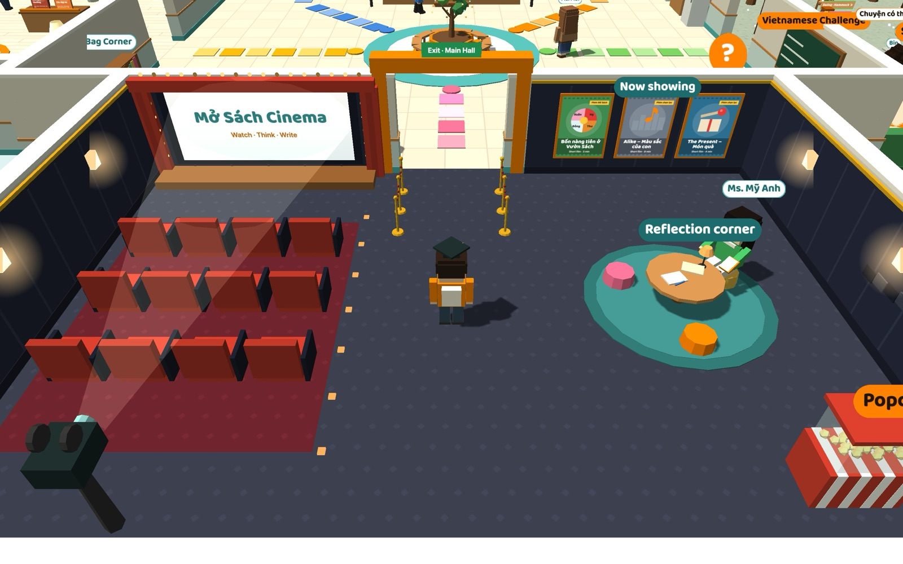

The challenge
Keep children reading and writing between classes
Mở Sách teaches in person. Between lessons, students had no place to practice that felt like the center: warm, playful and theirs. A plain course list can't compete with games and videos on a child's phone.
Constraints
- Young learners, many on phones, some on slow devices.
- No accounts, no server: progress lives on the device.
- The lessons teach Vietnamese, so they stay in Vietnamese.
- Teachers, not developers, add books, films and puzzles.
Design principles
Six decisions that shaped the space
3D is the hallway, 2D is the classroom
3D is for curiosity and moving around. Every lesson, book or quiz opens as a clean 2D panel.
Every 3D object has a button twin
A “Quick travel” menu and a 2D version mean no one is locked out by slow devices.
Mistakes are free
Stars only add up. A wrong answer gives a hint; two reveal the answer with an explanation.
Real evidence only
Argument lessons use verifiable evidence with sources; samples are labeled as samples.
Content is data
Books, films, puzzles and dialogue live in simple files. Adding a book is adding one entry.
Modeled on the real center
The teacher characters are based on real Mở Sách teachers, down to Ms. Vi watering her plants.
A walk through the rooms
Each room has one clear job

A tree that grows with you
The Open Book Tree grows as students earn Sea Stars. A storytelling stage and three new Vietnamese puzzles every day.

Courses as desks
Each desk is a course, colored by series. Opening one launches a full-screen 2D lesson.

Classics made approachable
Ten East & West classics retold as short summaries, plus a monthly “most read” board.

Play that sneaks in practice
Four seasons, a poem tree, word fishing, firefly riddles at night and a story corner.

Watch → Think → Write
Short films by Mở Sách teachers, followed by open questions and a written reflection.

Culture as a fair
Tết, Mid-Autumn, Halloween and Christmas by date. Six stalls, a quiz and a badge to wear.
Course design
Argument writing, one layer at a time
The flagship series teaches grades 6–9 to write an argument paragraph, in the order students actually build one: evidence first, the topic sentence last.
- Course 1 · recognize the 5 parts of a paragraph
- Course 2 · choose real evidence and explain it
- Course 3 · write reasons and a topic sentence, then the full paragraph
Six short lessons per course, a dolphin guide who never scolds, up to five Sea Stars.
The hamburger model
Accessibility & delivery
Light enough for a child's phone
Low-poly shapes and capped resolution keep it smooth on phones, with a joystick and tap-to-travel. Everything also works without 3D, and progress saves on the device.
What's next
Next steps
- Finish Course 3 of the argument series.
- Online saving, so teachers can read students' writing.
- Test with students on phones and tablets, then adjust pacing.